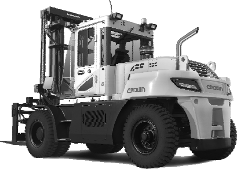
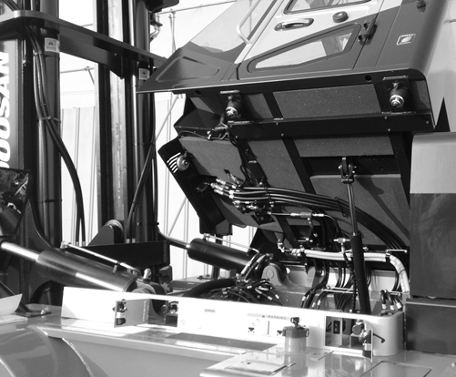

Make a thorough walk-around inspection before mounting the lift truck or starting the engine.
Look for such items as loose bolts, debris buildup, oil or coolant leaks. Check condition of
tyres, mast, carriage, forks or attachments. Have repairs made as needed and all debris
removed.

Typical Example
Inspect the operator's compartment for loose items and cleanliness.
Inspect the instrument panel for broken or damaged indicator lights or gauges.
Test the horn and other safety devices for proper operation.
Typical Example
Inspect the mast and lift chains for wear, broken links, pins and loose rollers.
Inspect the carriage, forks or attachments for wear, damage and loose or missing
bolts.
Inspect the tyres and wheels for cuts, gouges, foreign objects, inflation pressure and
loose or missing bolts.
Inspect the overhead guard and cabin for damage and loose or missing mounting bolts.
Inspect the hydraulic system for leaks, worn hoses or damaged lines.
Look for transmission and drive axle leaks on the lift truck and on the ground.
Inspect common parts and drive axle, mast etc for grounded, loosen or missing mounting
bolts.

Typical Example
Inspect the engine compartment for oil, coolant and fuel leaks.
Measure the engine crankcase oil level with the dip stick. Maintain the oil level between
the MAX. and MIN., (or FULL and ADD) notches on the dip stick.
Typical Example
Observe the engine coolant level in the coolant recovery bottle. With the engine cold,
maintain the level to the COLD mark. If the recovery bottle is empty, also fill the radiator
at the top tank.
Typical Example : For cabin type truck
Observe the fuel level gauge after starting the truck. Add fuel if necessary.
Warning:
Personal injury may occur from accidents caused by
improper seat adjustment. Always adjust the operator's seat before starting the lift
truck engine.
Seat adjustment must be done at the beginning of each shift and when
operators change.
To position the seat, PUSH the lever away from the seat track and move the seat forward or
backward to a comfortable position.